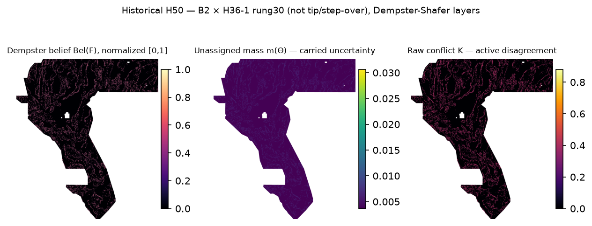
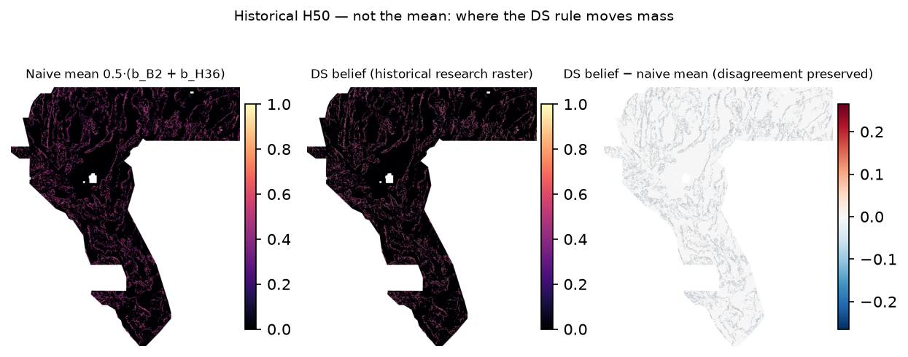

1 · One-click historical H50 research TIFF — not slot-cleared
⬇ Download H50 historical research GeoTIFF — do not upload (1,453,567 B) ⬇ archival .zip (not a submission format recommendation) ⬇ NaN-outside twin (official sample convention)
All three carry identical in-footprint values (SHA-audited twin). The zeros file is immune to the
portal's "[0, 1]" range rejection by construction; the NaN twin additionally passes
scripts/validate_submission.py's official-convention audit
(receipt).
Historical artifact identifier (not an authorization to submit): GEMSDOE48-H50-DS-B2xH36
Corrected archival note (177/200 chars; do not paste for submission): GEMSDOE48 H50 | Dempster fusion: B2 dotted x H36-1 rung30 (H19-5/rung-30 repacking; not tip/step-over); kernel-credit Bel, m(Theta)+K diagnostics; historical, unscored research.
SHA-256 5b59e106b6e448038b96fb340c5bae39094d4558c239c437aea28b6020d5d32f · one band float32 · EPSG:32611 · 100 m ·
3730×3292 · in-footprint [0.0000, 1.0000] ·
all-finite, no nodata tag · zeros outside footprint · 767,043 positive cells
Disagreement diagnostics (review only, never upload): unassigned mass m(Θ) · raw conflict K · plausibility Pl(F)
2 · What the fusion preserves that averaging destroys
Parents: dotted H33-2-B2 (37,654 px, owner live 0.2778) × H36-1 rung30 (not tip/step-over) (37,660 px, owner live 0.2710); intersection 26,248 / union 49,066 (Jaccard 0.535) — 22,818 pixels on which the two parent surfaces disagree. Dempster's rule carries that disagreement as unassigned mass m(Θ) (range 0.0037–0.0306 in footprint) and raw conflict K (max 0.8804; 11.5 % of the footprint > 0.3).
Not the naive mean (brief's required check): Pearson 0.9749, Spearman 1.0000, MAE 0.0133, max |Δ| 0.2648, 10.3% of cells with |Δ|>0.05, top-37,654 emission Jaccard 0.9687. Pearson vs the prior H48 artifact 0.454; zero SHA-256 collisions against 44 existing grid rasters.


3 · Blocked-holdout diagnostics (public proxies only)
SGMC off-catalogue truth (>300 m from catalogue), 4 fixed quadrants, official metric
| candidate | mean DTI | folds NW·NE·SW·SE |
|---|---|---|
| dotted_b2_parent | 0.095491 | 0.1018 · 0.0991 · 0.1075 · 0.0736 |
| H36-1 rung30 parent (not tip/step-over) | 0.093315 | 0.0998 · 0.0972 · 0.1048 · 0.0715 |
| union_decision | 0.097037 | 0.1037 · 0.1025 · 0.1057 · 0.0763 |
| naive_mean_beliefs | 0.062656 | 0.0646 · 0.0807 · 0.0415 · 0.0638 |
| raw_sparse_rho05_same_parents | 0.065108 | 0.0698 · 0.0666 · 0.0749 · 0.0491 |
| h50_ds_belief | 0.071553 | 0.0743 · 0.0914 · 0.0486 · 0.0718 |
| h50_binary_budget_matched | 0.087161 | 0.0933 · 0.0930 · 0.0950 · 0.0673 |
Catalogue truth proxy, same folds
| candidate | mean DTI | folds NW·NE·SW·SE |
|---|---|---|
| dotted_b2_parent | 0.006831 | 0.0061 · 0.0086 · 0.0075 · 0.0051 |
| H36-1 rung30 parent (not tip/step-over) | 0.047560 | 0.0411 · 0.0596 · 0.0445 · 0.0450 |
| union_decision | 0.046889 | 0.0407 · 0.0586 · 0.0443 · 0.0440 |
| naive_mean_beliefs | 0.035945 | 0.0325 · 0.0399 · 0.0386 · 0.0328 |
| raw_sparse_rho05_same_parents | 0.018654 | 0.0162 · 0.0234 · 0.0178 · 0.0172 |
| h50_ds_belief | 0.030323 | 0.0278 · 0.0345 · 0.0326 · 0.0264 |
| h50_binary_budget_matched | 0.007604 | 0.0066 · 0.0097 · 0.0086 · 0.0055 |
H50 beats the naive mean 4/4 folds on the SGMC proxy and improves on the raw-sparse rho=0.5 recipe with the same parents (+0.0064 mean), but loses to both parents and to the union on both proxies. The slot gate is not cleared; do not spend a weekly submission on this evidence alone.
4 · Public leaderboard snapshot (single manual read, 2026-10-07)
| rank | participant | best public | submissions |
|---|---|---|---|
| #1 | xiaofanhu | 0.3774 | 11 |
| #2 | alexoktaba | 0.3345 | 24 |
| #3 | nchuzhoy | 0.3262 | 5 |
| #4 | kinghorton42 | 0.3222 | 8 |
| #5 | joeyfezster | 0.3220 | 22 |
| #6 | Batik Shirt Brothers | 0.3218 | 21 |
| #7 | DARD | 0.3195 | 15 |
| #8 | ndavis7 | 0.2888 | 8 |
Source: official DrivenData public leaderboard. Scores identify participants, not files; no row is attributed to any local artifact.